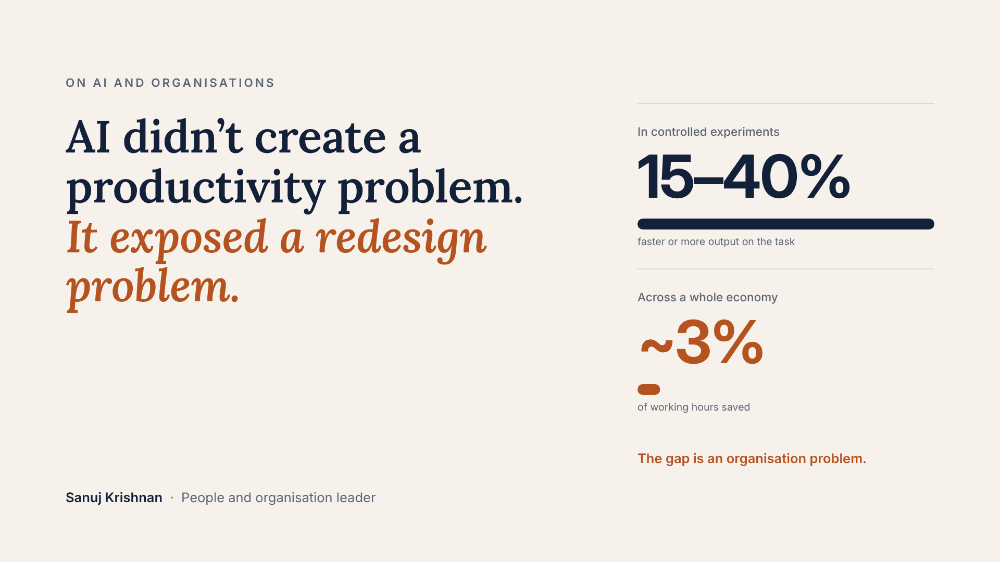
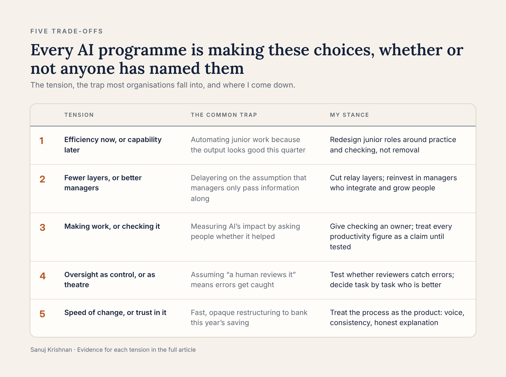
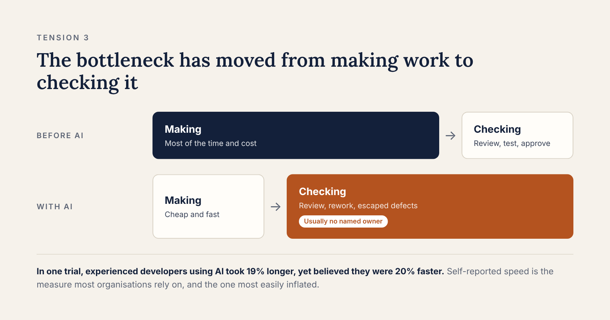
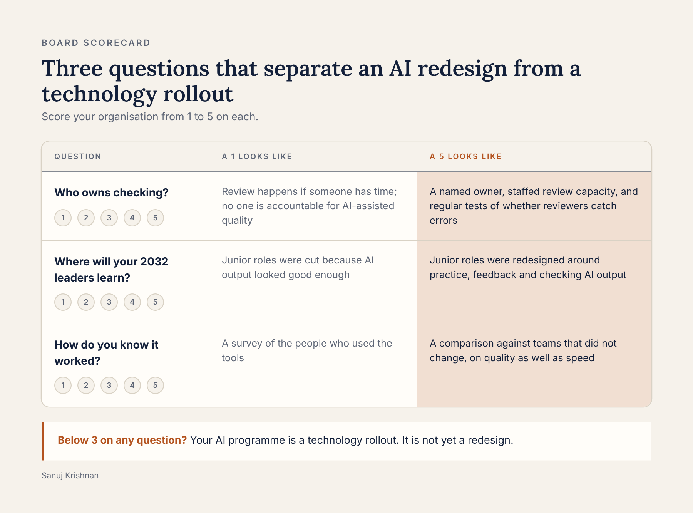

AI Didn't Create a Productivity Problem. It Exposed a Redesign Problem.
Sanuj Krishnan · November 2026

Here is a number every board should sit with.
In controlled experiments, AI makes knowledge workers dramatically faster. Customer-support agents resolved 15% more issues per hour. Professionals finished writing tasks in 40% less time. Developers in field trials completed 26% more work.
Then researchers looked at a whole economy. Tracking 25,000 workers in the most AI-exposed jobs in Denmark, they found AI saved about 3% of working hours, with no measurable effect on pay.
Both findings are true. The gap between them is not a technology problem. It is an organisation problem.
My view, after 16 years of building and rebuilding organisations across big tech, retail, high-growth startups and technology services: AI raises output on tasks, but only redesign raises output in organisations. And redesign is the part most leaders are delegating to IT.
I have sat on many hiring panels as the independent voice whose job was to protect the bar, not fill the seat. I have led restructurings in organisations that were growing fast and in ones that were shrinking. The pattern I keep seeing in AI programmes is the same one I saw in every reorganisation before them: the plan changes on paper, the work changes slowly, and the people who were supposed to make it stick were never given the job.
I spent the last few weeks going through the research properly: field experiments, labour-market studies, decades of work on automation, teams and organisational change. What follows are the five tensions I think leaders are now being forced to trade off, what the evidence says about each, and where I come down. The full evidence, with every source, is linked at the end.
Five tensions leaders are now trading off

1. Efficiency now, or capability later
AI helps the least experienced people most. In one large study, the newest support agents improved by about a third while the most experienced barely changed. That sounds like good news, until you see where it leads.
Employment of 22- to 25-year-olds in the most AI-exposed occupations in the US now sits 19% below where it would have been had it kept pace with less-exposed peers. Older workers in the same jobs did not decline. The work AI absorbs first, such as first drafts, routine fixes and basic analysis, is exactly the work through which people used to become experts.
My stance: every role you automate at the bottom is a leader you will not have in 2032. Junior roles should be redesigned around practice, judgement and checking AI output, not removed because the output looks good this quarter.
2. Fewer layers, or better managers
The evidence says AI flattens organisations. Firms that invest in AI end up with fewer layers. The same evidence says something most delayering plans miss: AI-adopting firms post more managerial jobs, not fewer. What changes is the job. Less budgeting, planning and passing information along. More integrating work across teams, managing stakeholders and developing people.
That second kind of manager is worth a great deal. Replacing a weak manager with a strong one has been shown to lift a team's output about as much as adding another person to it.
My stance: cut the layers that relay information. Then reinvest part of the saving in the managers who integrate and grow people. A flatter organisation with weaker managers is not leaner. It is just thinner.
3. Making work, or checking it

AI cuts the cost of producing work far more than the cost of checking it. In one carefully run trial, experienced developers working on their own code with AI took 19% longer. They had expected to be 24% faster, and afterwards still believed they had been 20% faster.
Read that twice. The most common way organisations measure AI's impact is by asking people whether it helped. The people in that study were confident, articulate and wrong.
Those were early-2025 tools, and the tools are improving fast. But the gap between what people felt and what was measured is the real finding, and better tools will not close it on their own.
My stance: the bottleneck has moved from making to checking, and almost no organisation chart has an owner for checking. Until it does, every productivity number you are shown is a claim, not a result.
4. Oversight as control, or oversight as theatre
Regulators, boards and customers are asking for a human in the loop. The research on what that human actually does is uncomfortable. When a simulated AI gave wrong answers on mammograms, the accuracy of very experienced radiologists fell from 82% to 46%. Explanations from the AI made people more likely to accept its advice, whether it was right or wrong. And in a separate study, doctors given an AI did no better than doctors alone, while the AI on its own did better than both.
People over-trust AI when they should not, and dismiss it when they should not.
Seen from outside the organisation, the stakes are plainer. A customer who receives a wrong answer, a wrong invoice or a wrong decision does not care that a human was technically in the loop. Neither does the investor who funded the programme on the promise of both speed and quality. When checking fails, the cost lands outside the building.
My stance: "a human reviews it" is not a control until you have tested whether the human catches errors. Decide, task by task, whether the person or the system is better, and design review around that, not around comfort. One simple test: plant known errors in the work and measure how many your reviewers catch.
5. Speed of change, or trust in it
One of the most replicated findings in organisational psychology is that people judge change by how fairly it was done, not only by how it turned out. Fair process means a voice for the people affected, consistent criteria, honest explanation and the ability to correct mistakes. It predicts trust and performance independently of the outcome.
The people who stay after a restructuring matter as much as those who leave. Decades of research show lower commitment and higher intent to leave among survivors when the process feels unfair.
My stance: in AI redesign, the process is the product. A fast, opaque restructuring buys this year's cost saving with next year's attrition.
What builders at the frontier are already showing
Over the past few months I have studied the architecture of two AI-native companies working on exactly these problems, from public material only. Both studies are on my GitHub.
The first uses AI agents to interview every employee in a company and turn the conversations into maps of how work actually happens. In effect, it automates the first step of any serious redesign: breaking roles into tasks. It also raises the oversight question in its sharpest form. When an AI writes down how your organisation works, and an executive can edit that record, who owns the truth about the organisation?
The second builds a "context layer": a governed memory of what an organisation's data means, who owns it, and the unwritten rules behind it. It is a direct response to the capability problem above. When an expert leaves, the rule they carried in their head ("we waive the fee for enterprise deals above a certain size") either stays in the system or leaves with them.
Neither company describes itself as an HR or organisation-design business. Both are building tools for the problems HR leaders should be owning: how work is mapped, how knowledge is kept, and who checks what the machine produces.
The technology is moving fast. The organisational thinking around it is not keeping up. That gap is where people leaders earn their seat.
What HR should own now
None of these tensions is a technology decision. Each is a decision about work, roles, people and trust, which is the territory HR exists to own. Four responsibilities follow:
- Checking capacity. Make the review of AI-assisted work a designed, staffed and measured part of roles, with a named owner, rather than something squeezed into the margins.
- The path to expertise. Redesign junior roles so people still build judgement, and track entry-level hiring and development as a strategic risk, not a cost line.
- A fair process for change. Run a fairness check before any redesign is announced: who gains, who loses, who had a voice, and how decisions can be corrected.
- What people actually do. Measure the work as it is done, not the process as it is written, and give named local leaders the job of correcting drift.
If HR does not take these on, they will be decided by default, inside technology programmes, by people who were never asked to think about them.
The last mile is people
I helped lead an AI-native redesign of an engineering organisation. Within six months, most of the new delivery teams hit their targets, quality on first submission rose, costs fell, and nine in ten people we moved into new roles were still in them six months later. Not one customer deployment was interrupted along the way.
Every team worked with the same tools and the same mandate. Six months later, most had genuinely changed how they worked. Two functions had quietly gone back to the old way, one hand-off at a time, and some of our strongest people left.
The uncomfortable part is that we saw it. In our reviews, almost every number was green, and the one that was not had been flagged well before anyone acted on it. The difference between the teams that held and the ones that slid was not the technology. It was who was in the seat, and whether they treated the change as theirs to make.
Research on hospitals adopting new surgical technology found the same thing more than twenty years ago: the teams that made the change stick had local leaders who treated it as a learning challenge. The others reverted.
Detecting drift is not the same as correcting it. Dashboards detect. People correct. That is the most expensive lesson I have learned about AI transformation, and it is a people lesson, not a technology one.
A three-question scorecard for any board

| Question | A 1 looks like | A 5 looks like |
|---|---|---|
| Who owns checking? | Review happens if someone has time; no one is accountable for AI-assisted quality | A named owner, staffed review capacity, and regular tests of whether reviewers catch errors |
| Where will your 2032 leaders learn? | Junior roles were cut because AI output looked good enough | Junior roles were redesigned around practice, feedback and checking AI output |
| How do you know it worked? | A survey of people who used the tools | A comparison against teams that did not change, on quality as well as speed |
If you scored below 3 on any of these, your AI programme is a technology rollout. It is not yet a redesign.
The full evidence behind this piece, with the experiments, effect sizes, open questions, an eight-step redesign method and every source, is in the evidence companion: The Task Is the Unit.
What tension are you wrestling with most? I would like to hear it.